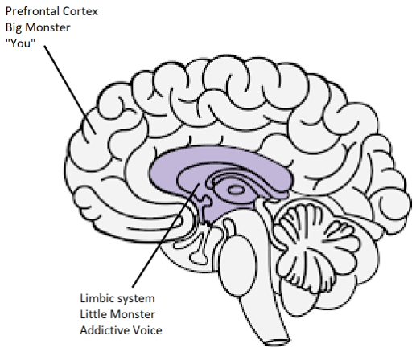

Bronnen
Meditaties van een Porno Verslaafde - Guillaco
EasyPeasy Verklaringen Checklist - SWATxKATS
9 Minuten Meditatie - Sam Harris
Wakker Worden Meditatie Cursus - Sam Harris
Het Verlaten van Moderniteit - Meta Nomad // (pdf)
Brief die ik naar scholen stuur
Vrijheid Voor Altijd(PMO Hacknotes)
Waarom je terugvalt - u/Different_Guide_5205
Het tegengaan van angst - u/Different_Guide_5205
REBT Coping Verklaringen
“Ik kan stoppen met PMO, ook al lijkt het ‘moeilijk’ om dat te doen. Het is niet te moeilijk, en hoeveel moeite het ook kost, het is de moeite waard!”
“Als ik mijn krachtige drang om PMO te doen blijf negeren en nooit toegeef, zal het steeds makkelijker worden om ze te weerstaan.”
“ Ik kan mezelf volledig en onvoorwaardelijk accepteren - ja, zelfs met al mijn gebreken en tekortkomingen.”
“ PMO lijkt mijn problemen snel te ‘genezen’, maar maakt ze eigenlijk erger.”
“ Soms zou ik mijn problemen graag willen verdrinken in PMO, maar dat is nooit een reden om dat te doen.”
“ Het is het meest ongemakkelijk wanneer ik niet krijg wat ik echt wil. Maar het is niet verschrikkelijk of vreselijk, tenzij ik ervoor kies om dat te geloven, en ik kies ervoor om iets realistischer en behulpzamer te geloven.”
“ Ik zal nooit van oneerlijke behandeling houden, maar ik kan het wel verdragen en misschien zelfs plannen en bedenken om het te stoppen.”
“ Hoe vaak ik ook faal in deze belangrijke poging, mijn mislukking maakt me nooit een onbekwaam iemand. Het maakt me gewoon een persoon die misschien onbekwaam heeft gehandeld op dat moment.”
“ Ik heb absoluut niet nodig wat ik wil, maar ik kan nog steeds redelijk gelukkig zijn, hoewel niet zo gelukkig als wanneer ik het niet krijg.”
“Ik geef er sterk de voorkeur aan om uit te blinken in mijn werk, maar ik hoef het niet te zijn. Jammer als ik dat niet ben, maar dat maakt me niet minderwaardig. Ik kan altijd proberen om beter te doen zonder dat ik beter hoef te doen.”
“ Veel dingen kunnen me verdrietig en teleurgesteld maken, maar wanneer ik eis en beveel dat deze dingen niet mogen bestaan, maak ik mezelf vervolgens in paniek, depressief en woedend.”
“ Ja, ik ben vaak niet in staat geweest om te doen wat ik beloofde te doen, maar dat betekent niet dat ik deze belofte niet kan of zal nakomen.”
“ Ik heb een hekel aan het vreselijk angstig en depressief zijn, maar ik hoef deze gevoelens niet meteen op te lossen met PMO. Als ik PMO, voel ik me tijdelijk beter over mijn problemen, maar ik word niet beter. Op de lange termijn maakt PMO ze alleen maar erger.”
“Mensen maken me niet woedend door me slecht te behandelen. Ik kies eigenwijs ervoor om mezelf boos te maken over hun slechte behandeling door te eisen en te bevelen dat ze beter handelen.”
Het combineren van EasyPeasy met Jack Trimpey’s Addictive Voice Recognition Technique (AVRT)
Met dank aan az#8773 op Discord
Dit is voor mensen die moeite hebben om de methode van Allen Carr’s Easyway te gebruiken om van een verslaving af te komen, ondanks het verwijderen van de hersenspoeling. Ik ga ervan uit dat iedereen die dit leest een van Allen Carr’s boeken heeft gelezen en zijn Easyway-methode heeft begrepen. Zo niet, dan raad ik ten zeerste aan om dit te doen. Het zou ook helpen als je ‘Rational Recovery’ van Jack Trimpey hebt gelezen. Als je dat niet hebt gelezen, is dat geen probleem, want ik ga hier de basisprincipes ervan behandelen, maar ik raad toch aan om het te lezen omdat het veel meer in detail gaat dan ik zal doen. Dit is niet gericht op een specifieke verslaving en is daarom van toepassing op elke verslaving. Het doel van deze tekst is om Easyway te vergelijken met een andere succesvolle methode voor verslavingsbehandeling genaamd de ‘Addictive Voice Recognition Technique’ (AVRT) en om ze te combineren. Hoewel ik geloof dat Easyway veruit superieur is aan alle andere methoden voor verslavingsbehandeling, geloof ik dat het begrijpen van AVRT ook de ontbrekende schakel kan zijn voor velen die falen bij het gebruik van Easyway ondanks het verslaan van het grote monster.
Er zijn veel concurrerende methoden om verslaving te overwinnen, elk met verschillende succespercentages. Ik ga ze niet allemaal noemen omdat de meeste tijdverspilling zijn en ik dit zo kort mogelijk wil houden. De enige methoden waarover ik ga schrijven zijn Allen Carr’s Easyway en Jack Trimpey’s (oprichter van Rational Recovery) AVRT. Beide methoden hebben extreem hoge succespercentages, maar richten zich op iets anders. Easyway en AVRT zijn vergelijkbaar in het feit dat Easyway de verslaving opsplitst in de ‘Kleine Monster’ en ‘Grote Monster’ en AVRT jouw geest opsplitst in de ‘Verslavende Stem’ (ook bekend als het beest) en ‘Jij’. De verslavende stem en het kleine monster zijn hetzelfde, en het grote monster (ook bekend als hersenspoeling) is het geloofssysteem dat je hebt waardoor je denkt dat je verslaving je enige vorm van voordeel of steun geeft. Easyway richt zich op het elimineren van het grote monster met weinig aandacht voor het kleine monster, terwijl AVRT zich richt op het kleine monster met geen aandacht voor het grote monster. Terwijl Easyway de psychologische verslaving vernietigt, leert AVRT je om de fysieke verslaving te herkennen die zich voordoet als jou en je ervan te scheiden. Ik vind het interessant dat Easyway en AVRT beide zeer hoge succespercentages hebben ondanks dat ze zich richten op het tegenovergestelde.
Hoewel ik geloof dat Easyway veruit superieur is aan alle andere methoden voor verslavingsbehandeling en terwijl ik het boven alles aanbeveel, kan ik twee kleine gaten erin vinden. Ten eerste vind ik dat het het kleine monster onderschat. Ik wil vermijden om persoonlijke anekdotes in deze tekst te gebruiken, maar uit mijn ervaringen en die van anderen blijkt dat sommigen van ons falen bij Easyway niet omdat we er niet in geslaagd zijn om het grote monster volledig te elimineren (hoewel dit kan en gebeurt) maar omdat we het kleine monster hebben onderschat. Het kleine monster is voor de meeste mensen geen probleem, wat de hoge succespercentages van Easyway verklaart, maar voor anderen, waaronder ikzelf, kan het dat wel zijn. Het tweede gat is dat Easyway zegt dat alle mislukkingen het gevolg zijn van het niet volgen van instructies of het niet verwijderen van het grote monster.
De essentie van Easyway is als volgt. De verslaving heeft 2 componenten, de fysieke verslaving aan dopamine en de psychologische verslaving bestaande uit overtuigingen (hersenspoeling) dat je verslaving je enige vorm van plezier of steun geeft. Deze worden respectievelijk het kleine en grote monster genoemd. Volgens Easyway is het kleine monster niets meer dan een leeg, licht onzeker gevoel dat nauwelijks waarneembaar is. Zodra je het grote monster doodt door de hersenspoeling ongedaan te maken door te leren hoe je verslaving geen voordelen heeft en hoe elk waargenomen plezier of steun slechts illusie is, en even belangrijk hoe er niets te vrezen valt van een leven zonder je verslaving, verdwijnen de verlangens. De verlangens komen voort uit je angst dat het leven zonder je kleine steuntje ondraaglijk zou zijn, wat ervoor zorgt dat je twijfelt aan stoppen, wat de behoefte is. Je overwint de angst door je te realiseren hoeveel plezieriger je leven zal zijn zonder je verslaving, en je behoudt dat gevoel van geluk.
Hoewel ik geloof dat dit de beste methode is om van een verslaving af te komen, legt het geen nadruk op het kleine monster omdat theoretisch gezien, zodra het grote monster is aangepakt, het hulpeloze machteloze kleine monster vanzelf zal verwelken en sterven, en het is bijna onmerkbaar, dus wie maakt zich daar druk om. Het kleine monster is misschien onbeduidend voor veel mensen, maar uit mijn eigen ervaringen en die van anderen blijkt dat dit niet altijd het geval is. Wanneer mensen falen met Easyway, volgens Easyway, zijn er slechts 2 mogelijke redenen, ofwel heb je de instructies niet goed gevolgd of heb je nagelaten het grote monster te verwijderen. Ik geloof dat dit schadelijk is en ik zal later uitleggen waarom.
De Addictive Voice Recognition Technique (AVRT) splitst de hersenen in 2 delen, de lagere hersenen (limbisch systeem) waar je verslaving zich bevindt en de hogere hersenen (prefrontale cortex) waar jij (of in ieder geval je gedachten en ego) zich bevinden. Jack Trimpey noemt de verslavende stem het beest omdat het zich bevindt in het dierlijke deel van onze hersenen en het slechts één ding weet, “IK WIL HET EN IK WIL HET NU”. Ikzelf vind het niet nuttig om het te personifiëren als een beest, maar ik veronderstel dat het beter is dan te geloven dat het jij bent. De verslavende stem (AV, klein monster) zal je denkstem kapen en deze tegen je gebruiken om je te verleiden tot het toegeven aan je verslaving. Het moet dit doen omdat het niet je motorische functies zelf kan controleren. Je kunt dit nu proberen, steek je hand voor je gezicht en beweeg je vingers. Vraag nu je verslaving om hetzelfde te doen. Het kan niet. Dit betekent dat jij uiteindelijk degene bent die hier de controle heeft.

De verslavende stem (AV) kaapt niet alleen je interne stem, maar verbergt zich ook bedrieglijk achter het voornaamwoord “ik”. Het zegt dingen als “Ik heb echt behoefte aan X op dit moment”, “Ik mis echt het doen van X”, “Zou het niet fijn zijn om nu X te doen, na alles wat ik vandaag heb meegemaakt.” AVRT benadrukt het feit dat je niet je verslavende stem bent, je denkt alleen dat je dat bent. Wanneer je de AV herkent als ‘niet jij’ en er nee tegen zegt, laat het de “ik” vallen en begint het “jij”, “ons” of “wij” te gebruiken. Dit is het bewijs dat het niet jij bent.
Wanneer je “Nee” zegt tegen je AV, gebeurt dit:
“Ik heb echt behoefte aan X op dit moment” wordt “Kom op, jij hebt echt behoefte aan X op dit moment en dat weet je”. “Ik mis echt het doen van X” wordt “Kom op, je mist zeker het doen van X, kun je dat niet voelen?” “Zou het niet fijn zijn om nu X te doen, na alles wat ik vandaag heb meegemaakt.” wordt “We verdienen het om nu X te doen na alles wat we hebben meegemaakt, hoe kun je ons dit ontzeggen?”
Op dit punt moet ik iets verduidelijken. Dit is niet de ‘touwtrekwedstrijd’ waar Allen Carr naar verwijst. De ‘touwtrekwedstrijd’ is innerlijke strijd, waarbij je 2 of meer tegenstrijdige overtuigingssystemen hebt en het gevolg is van het niet doden van het grote monster. “Ik wil echt geen X doen vanwege dit negatieve effect dat het me geeft, maar het maakt me ook X, dus wil ik het doen”. Dit is de touwtrekwedstrijd en is het werk van het grote monster. Zodra het grote monster dood is door het hersenspoelen te verwijderen, zullen de enige stemmen die je vertellen om in je verslaving te vervallen afkomstig zijn van het kleine monster (de AV). Omdat de AV het voornaamwoord “ik” gebruikt, wordt het verwarren van de AV met het grote monster een mogelijkheid.
Het is ook belangrijk om op te merken dat de AV een enorme leugenaar is. Het enige waar het om geeft, is het krijgen van dopamine, ongeacht de kosten. Je AV zal proberen je ervan te overtuigen om jezelf in potentieel dodelijke situaties te brengen als dat betekent dat je een fix krijgt.
Eerder zei ik: “Als mensen falen met Easyway, volgens Easyway, zijn er slechts 2 mogelijke redenen, of je hebt de instructies niet goed gevolgd of je bent er niet in geslaagd het grote monster te verwijderen. Ik geloof dat dit schadelijk is en ik zal later uitleggen waarom.” Ik geloof dat dit schadelijk is omdat het niet herkennen van de AV mijzelf en anderen die Easyway hebben gebruikt, heeft geleid tot de onjuiste overtuiging dat we het grote monster niet volledig hebben gedood. Dus lezen we het boek opnieuw om te proberen de hersenspoeling opnieuw te doden, ook al hebben we dat al gedaan. Het niet herkennen van de AV gecombineerd met de overtuiging dat ‘als je gefaald hebt met Easyway, het betekent dat je er niet in geslaagd bent het grote monster te doden’ zal ertoe leiden dat je je inspanningen opnieuw richt op het grote monster, terwijl dat al is verslagen. Je kunt in een cyclus terechtkomen van het herlezen van de boeken van Allen Carr, een tijdje volhouden en dan steeds weer terugvallen.
Wanneer de AV zegt: “Ik wil nu X doen omdat het me X maakt”, als je de hersenspoeling hebt ongedaan gemaakt en het grote monster hebt verwijderd, denk je misschien: “Maar ik weet dat dit niet waar is, dus waarom geloof ik het nog steeds? Heb ik gefaald om de hersenspoeling volledig ongedaan te maken?” De waarheid is hier dat je de hersenspoeling hebt verwijderd, wat blijkt uit het feit dat je beter weet dan wat je AV je vertelt, het is alleen dat je denkt dat de AV jij bent omdat het het voornaamwoord “ik” gebruikte. Het herkennen van de AV en het dwingen om zichzelf te onthullen door het “ik” te vervangen door “jij”, “we” of “ons” zou je moeten bevestigen dat het niet het grote monster is, het is het kleine monster. Als het inderdaad het grote monster was, zou het het “ik” niet vervangen door “jij”, “we” of “ons”.
Nu, wanneer de AV zegt: “Alsjeblieft, kunnen we gewoon X nog een keer doen voor de oude tijd, gewoon nog een keer?” en je zegt “Nee”, kun je een emotionele reactie voelen. Je kunt angst of verdriet voelen. Het is uiterst belangrijk om te realiseren dat dit gevoel niet van jou komt, het komt van de AV. Als je niet in staat bent om de AV te herkennen, zul je denken dat deze emotie van jou komt en eerder geneigd zijn toe te geven. Herken de AV en het feit dat de emoties die ervan komen niet van jou komen, voel dan vreugde hierin.
Wanneer je beide methoden combineert (indien nodig, niet alle mensen lijken een probleem te hebben met het kleine monster) en een gevoel van vreugde en geluk behoudt wanneer je de AV herkent, is succes van jou.